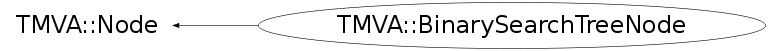

class TMVA::BinarySearchTreeNode: public TMVA::Node
Node for the BinarySearch or Decision Trees
for the binary search tree, it basically consists of the EVENT, and
pointers to the parent and daughters
in case of the Decision Tree, it specifies parent and daughters, as
well as "which variable is used" in the selection of this node, including
the respective cut value.
Function Members (Methods)
public:
private:
| virtual void | ReadAttributes(void* node, UInt_t tmva_Version_Code = TMVA_VERSION_CODE) |
| virtual void | ReadContent(stringstream& s) |
| virtual Bool_t | ReadDataRecord(istream& is, UInt_t tmva_Version_Code = TMVA_VERSION_CODE) |
Data Members
protected:
| UInt_t | TMVA::Node::fDepth | depth of the node within the tree (seen from root node) |
| TMVA::Node* | TMVA::Node::fLeft | pointers to the two "daughter" nodes |
| TMVA::Node* | TMVA::Node::fParent | the previous (parent) node |
| TMVA::BinaryTree* | TMVA::Node::fParentTree | pointer to the parent tree to which the Node belongs |
| char | TMVA::Node::fPos | position, i.e. it is a left (l) or right (r) daughter |
| TMVA::Node* | TMVA::Node::fRight | pointers to the two "daughter" nodes |
Class Charts
{kind=link}
{kind=link}
{kind=link}
{kind=link}

Function documentation
BinarySearchTreeNode(const TMVA::Event* e = NULL, UInt_t signalClass = 0)
constructor of a node for the search tree
BinarySearchTreeNode(TMVA::BinarySearchTreeNode* parent, char pos)
constructor of a daughter node as a daughter of 'p'
BinarySearchTreeNode(const TMVA::BinarySearchTreeNode& n, TMVA::BinarySearchTreeNode* parent = NULL)
copy constructor of a node. It will result in an explicit copy of the node and recursively all it's daughters
Bool_t GoesRight(const TMVA::Event& ) const
check if the event fed into the node goes/decends to the right daughter
Bool_t GoesLeft(const TMVA::Event& ) const
check if the event fed into the node goes/decends to the left daughter
Bool_t EqualsMe(const TMVA::Event& ) const
check if the event fed into the node actually equals the event that forms the node (in case of a search tree)
void PrintRec(ostream& os) const
recursively print the node and its daughters (--> print the 'tree')
Bool_t ReadDataRecord(istream& is, UInt_t tmva_Version_Code = TMVA_VERSION_CODE)
Read the data block
void ReadAttributes(void* node, UInt_t tmva_Version_Code = TMVA_VERSION_CODE)
read attributes from XML
void SetSelector(Short_t i)
set index of variable used for discrimination at this node
{ fSelector = i; }Short_t GetSelector() const
return index of variable used for discrimination at this node
{ return fSelector; }